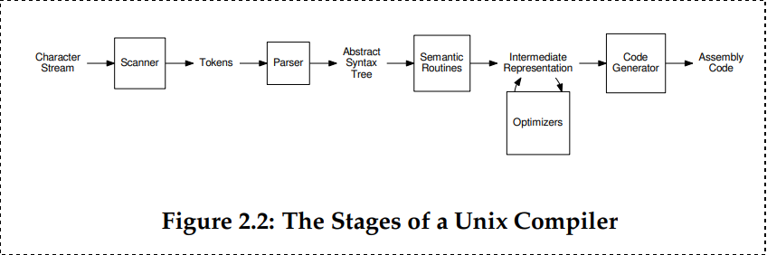
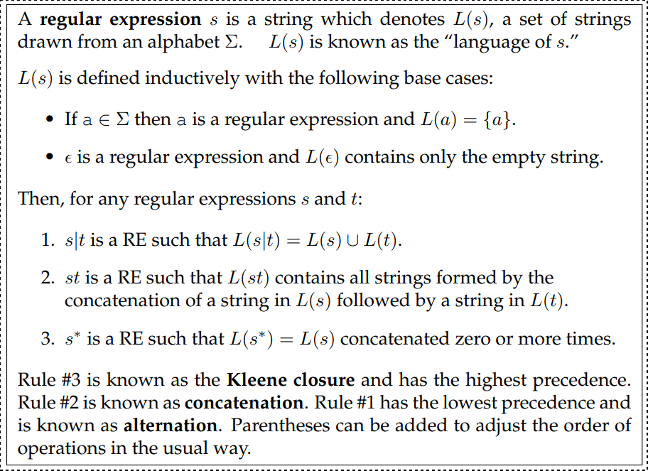

Introduction
These are my notes for the book Introduction to Compilers and Language Design.
The source repository for this website is here. Any pull requests, contributions welcome!
What is a compiler?
- A compiler translates a program in a source language to a program in a target language.
- A compiler is distinct from an interpreter, which reads in a program and then executes it directly, without emitting a translation. This is also sometimes known as a virtual machine. Languages like Python and Ruby are typically executed by an interpreter that reads the source code directly.
- Compilers and interpreters are closely related, and it is sometimes possible to exchange one for the other. For example, Java compilers translate Java source code into Java bytecode, which is an abstract form of assembly language. Some implementations of the Java Virtual Machine work as interpreters that execute one instruction at a time. Others work by translating the bytecode into local machine code, and then running the machine code directly. This is known as just in time compiling or JIT.
Why should you study compilers ?
- You will be a better programmer.
- You can create tools for debugging and translating.
- You can create new languages.
- You can contribute to existing compilers.
What language should I use
- Author thinks you should use C and use it to compile a C like language which produces assembly for a widely used processor like x86 or ARM.
A Quick Tour
The Compiler Toolchain
Stages Within a Compiler

Scanning
Kind of Tokens
- Scanning is the process of identifying tokens from the raw text source code of a program.
Most languages will have tokens in these categories:
- Keywords
- Identifiers
- Numbers
- Strings
- Comments and Whitespace
A Hand-Made Scanner
- The basic approach is to read one character at a time from the input
stream (
fgetc(fp)) and then classify it. - Hand Made scanner is usually verbose.
- For a complex language with a large number of tokens, we need a more formalized approach to defining and scanning tokens. A formal approach will allow us to have a greater confidence that token definitions do not conflict and the scanner is implemented correctly.
- The formal tools of regular expressions and finite automata allow us to state very precisely what may appear in a given token type. Then, automated tools can process these definitions, find errors or ambiguities, and produce compact, high performance code.
Regular Expressions
- Regular expressions (REs) are a language for expressing patterns.
- They were first described in the 1950s by Stephen Kleene.

Note that ϵ represents empty string.

The syntax described so far is entirely sufficient to write any regular expression. But, it is also handy to have a few helper operations built on top of the basic syntax:

Regular expressions also obey several algebraic properties, which make it possible to re-arrange them as needed for efficiency or clarity:

Some examples of regular expressions:

Finite Automata
- A finite automaton (FA) is an abstract machine that can be used to represent certain forms of computation.
- Graphically, an FA consists of a number of states (represented by numbered circles) and a number of edges (represented by labeled arrows) between those states. Each edge is labeled with one or more symbols drawn from an alphabet Σ.
- The machine begins in a start state S0. For each input symbol presented to the FA, it moves to the state indicated by the edge with the same label as the input symbol.
- Some states of the FA are known as accepting states and are indicated by a double circle. If the FA is in an accepting state after all input is consumed, then we say that the FA accepts the input.
- We say that the FA rejects the input string if it ends in a non-accepting state, or if there is no edge corresponding to the current input symbol.
- Every RE can be written as an FA, and vice versa.
- For a simple regular expression, one can construct an FA by hand.
FA for regular expression for:

FA for regular expression [a-z][a-z0-9]+:

FA for regular expression ([1-9][0-9]*)|0

Deterministic Finite Automata
- Each of the above three examples is a deterministic finite automaton (DFA).
- A DFA is a special case of an FA where every state has no more than one outgoing edge for a given symbol.
- Put another way, DFA has no ambiguity: For every combination of state and symbol there is exactly one choice of what to do next.
- DFA is easy to implement in software or hardware.
Nondeterministic Finite Automata
- The alternative to a DFA is a nondeterministic finite automaton (NFA). A NFA is a perfectly valid FA, but it has an ambiguity that makes it somewhat more difficult to work with.
- Example: Regular expression
[a-z]*ingwhich represents all lowercase ending in the suffixing. It can be represented by the following automaton:

There is a ambiguity in the above automamata because the word sing
could proceed in two different ways:
- State 0 (s) -> State 1 (i) -> State 2 (n) -> Stage 3 (g)
- State 0 (s) -> State 0 (i) -> State 0 (i) -> State 0 (g)
Both ways obey the transition rules, but one results in acceptance, while the other results in rejection.
- And the above NFA becomes complicated for a word like
singing - An NFA can also have an ϵ (epsilon) transition, which represents
an empty string. This transition can be taken without consuming any
input symbols at all. For example, we could represent the regular
expression
a*(ab|ac)with this NFA:

The above NFA also presents a variety of ambiguos choices:
- From state zero, it could consume
aand stay in state zero. - From state zero, it could consume ϵ to state one.
- From state zero, it could consume ϵ to state four.
There are two common ways to interpret this ambiguity:
- The crystal ball interpretation says that NFA somehow knows what the best choice is, by some means external to the NFA. Needless to say, this isn't possible in a real implementation.
- The many-worlds interpretation suggests that NFA exists in all
allowable states
simultaneously. When the input is complete, if any of those states are accepting states, then the NFA has accepted the input. This interpretation is more useful for constructing a working NFA, or converting it to a DFA.
Let us use the many-worlds interpretation on the example above. Suppose
that the input string is aaac.
- Initial State: Initially the NFA is in state zero. Without consuming any input, it could take an epsilon transition to states one or four. So, we can consider it's initial state to be all of those simultaneously.
- Second State (after consuming
a): From state zero, it can consumeaand remain in State 0, or go to state 1 or 4 with epsilon transition. And from state one (from initial state on step 1), it can go to state 2. Similarly from state 4 (from initial step on step 1), it can go to state 5. So in the second state, it can be in state 0, 1, 4, 2 or 5 simultaneously.
NFA would traverse these states untill accepting the complete string
aaac:

- In principal once can implement an NFA in software or hardware by simply keeping track of all of the possible states. But it is inefficient.
- A better approach is to convert NFA into an equivalent DFA.
Conversion Algorithms
- For every RE, there is an FA, and vice versa.
- DFA is by far the most straightfoward of the three to implement in software.
{kind=link}
Converting REs to NFAs
- We follow the same inductive definition of regular expression as given earlier. We define automata corresponding to base cases of REs:

- If we write the concatenation of
AandBasAB, then the corresponding NFA is simplyAandBconnected by an ϵ transition.

- In a similar fashion, the alternation of
AandBwritten asA|Bcan be expressed as two automata joined by common starting and accepting nodes, all connected by ϵ transitions
{kind=link}
- Finall, the Kleene closure
A*is constructed by taking the automaton forA, adding starting and accepting nodes, then adding ϵ transitions to allow zero or more repetitions:

Example: Convert RE a(cat|cow)* to NFA
- Step 1: Construct NFA for
catandcow(the innermost expression)

- Step 2: Construct NFA for
cat|cow

- Step 3: Construct NFA for Kleene closure
(cat|cow)*

- Step 4: Construct NFA for RE
a(cat|cow)*

Observations from the above example:
- It's complex and contains large number of epsilon transitions.
- Could be impractical to implement for a complete language that could end up having thousands of states.
- Instead, we can convert NFA into an equivalent DFA.
Converting NFAs to DFAs
- The technique to convert any NFA into an equivalent DFA is called subset construction.
- Basic idea is to create a DFA such that each state in the DFA
corresponds to multiple states in the NFA, according to the
many-worldsinterpretation.

{kind=link}
Example of converting NFA to DFA for the regualr expression which we saw
previously: a(cat|cow)*

Before diving into each steps, let's see a concrete example of epsilon closure using the above example.
ϵ-closure(No) = {No} because No is the only state that is reachable from NFA state No by zero or more ϵ transitions.
Each steps of the algorithm:
{kind=link}

Minimizing DFAs
- Large DFAs will consume a lot of memory.
- We can apply Hopcroft's algorithm to shrink a DFA into a smaller DFA.


Observations:
- If we are in super-state (1,2,3,4) then an input of
aalways goes to state 2, which keeps us within the super-state. So, this DFA is consistent with respect toa. - From super-state (1,2,3,4) an input of
bcan either stay within the super-state or go to super-state (5). So, the DFA is inconsistent with respect tob.
{kind=link}
Observations:
- We observe that super-state 1,2,3 is consistent with respect to
a. - But not consistent with respect to
bbecause it can either lead to state 3 or state 4. - We attempt to fix this by splitting out state 2 into its own super-state, yielding this DFA:
{kind=link}
Limits of Finite Automata
- Not sufficient to analyze all of the structures in a problem.
- Designing a finite automaton to match an arbitrary number of nested parenthesis is impractical.
- So, we limit ourselves to using regular expressions and finite automata for the narrow purpose of identifying the words and symbols within a problem.
Using a Scanner Generator
- The program Lex developed at AT&T was one of the earliest examples of a scanner generator.
- Vern Paxson translated Lex into the C language to create Flex.

To use Flex, we write a specification of the scanner that is a mixture of regular expressions, fragments of C code, and some specialized directives. The Flex program itself consumes the specification and produces regular C code that can then be compiled in the normal way.
A peculiar requirement of Flex is that we must define a function
yywrap() which returns 1 to indicate that the input is complete at the
end of the file. If we wanted to continue scanning in another file, then
yywrap() would open the next file and return 0.
ls /
Parsing
Overview
- To parse a computer program, we must first describe the form of valid sentences in a language. This formal statement is known as a context free grammar (CFG). Because they allow for recursion, CFGs are more powerful than regular expressions and can express a richer set of structures.
- LL(1) grammars are CFGs that can be evaluated by considering only the current rule and next token in the input stream. This property makes it easy to write a hand-coded parser known as a recursive descent parser.
- LR(1) grammars are more general and more powerful than LL(1). Nearly all useful programming languages can be written in LR(1) form. However, the parsing algorithm for LR(1) grammars is more complex and usually cannot be written by hand. Instead, it is common to use a parser generator that will accept an LR(1) grammar and automatically generate the parsing code.
Context Free Grammars
Terminal
- A terminal is a discrete symbol that can appear in the language, otherwise known as a token from the previous chapter.
- Examples: keywords, operators and identifiers.
- Convention: lower-case letters to represent terminals.
Non terminal
- A non-terminal represents a structure that can occur in a language, but is not a literal symbol.
- Examples: declarations, statements and expressions.
- Convention: Upper-case letters to represent non terminals:
Pfor programs,Sfor statement,Efor expression etc.
Sentence
- A sentence is a valid sequence of terminals in a language.
Sentential form
- A sentential form is a valid sequence of terminals and non terminals.
- Convention: Greek symbols to represent sentential forms. Example: α, β and γ to represent possibly mixed sequence of terminals and non-terminals. We will use a seqence like Y1Y2...Yn to indicate the individual symbols in a sentential form: Yi may either be a terminal or non terminal.
Context Free Grammar (CFG)
- A CFG is a list of rules that formally describe the allowable sentences in a language.
- The left hand side of each rule is always a single non-terminal.
- The right hand side of a rule is a sentential form that describes an allowable form of that non-terminal.
- Example rule:
A -> xXyindicates that the non-terminalArepresents a terminalxfollowed by a non-terminalXand a terminaly. - The right hand side of a rule can be ϵ to indicate that the rule produces nothing.
- The first rule is special: it is the top level definition of aprogram and it's non terminal is known as the start symbol
Sample CFG describing expressions involving addition, integers and identifiers:

For brevity, the above grammar can also be written as:
E -> E + E | ident | int
Deriving Sentences
- Each grammar describes a (possibly infinite) set of sentences, which is known as the language of the grammar.
- To prove that a given sentence is a member of that language, we must show that there exists a sequence of rule applications that connects the start symbol with the desired sentence.
- A sequence of rule applications is known as a derivation and a double arrow (⇒) is used to show that one sentential form is equal to another by applying a given rule. Example: E ⇒ int by applying rule 4 of grammer G2.
There are two approaches to derivation:
- top-down: Begin with the start symbol, and then apply rules in the CFG to expand non terminals until reaching the desired sentence.
- bottom-up: Begin with the desired setence, and then apply the rules backwards until reaching the start symbol.
For example, ident + int + int is a sentence in this language and here
is one top-down derivation to prove it:

And similar proof using bottom-up derivation:

It is quite possible for two different grammars to generate the same language, in which case we describe them as having weak equivalence.
Ambiguous Grammars
- An ambiguous grammar allows for more than one possible derivation of the same sentence.
- Example: The sentence
ident + int + intcan have two derivations:

- Does it matter in the above case ? It certainly does!
- In a language like Java such a sentence
hello + 5 + 5could be interpreted as eitherhello55orhello10and that's not good. - It is possible to re-write a grammer so that it is not ambiguous. In the common case of binary operators, we can require that one side of the expression be an atomic term (T), like this:

- With this change, the grammer is no longer ambigous. But it still accepts the same language as Grammer G2
- If you want to construct a grammar with more operators (division, muliplication) - then the usual approach is to construct a grammar with multiple levels that reflect the intended precedence of operators:

Grammar which supports two if statements (if-then and if-then-else variant):

The above grammer is ambiguous because it allows for two derivations of this sentence:
- If E then if E then other else other
There are two derivations of this sentence:
- If E then (if E then other else other)
- If E then (if E then other) else other
LL Grammars
- LL(1) grammars are a subset of CFGs that are easy to parse with simple algorithms.
- A grammar is LL(1) if it can be parsed by considering only one non-terminal and the next token in the input stream.
To ensure a grammar is LL(1) we must do the following:
- Remove any ambiguity as shown above.
- Eliminate any left recursion.
- Eliminate any common left prefixes.
Eliminating Left recursion
LL(1) grammars cannot contain left recursion which is a rule of the form A → Aα or, more generally, any rule A → Bβ such that B ⇒ Aγ by some sequence of derivations.

Eliminating Common Left Prefixes

Fixing the grammar will result in:
{kind=link}
First and Follow Sets
- In order to construct a complete parser for an LL(1) grammar, we
must compute two sets, known as
FIRSTandFOLLOW. - Informally, FIRST(α) indicates the set of terminals (including ϵ) that could potentially appear at the beginning of any derivation of α.
- FOLLOW(A) indicates the set of terminals (including $) that could potentially occur after any derivation of non-terminal A.
- Given the contents of these two set, the LL(1) parser will always
know
which rule to pick next.

For non terminals, it says this:
For each rule X → Y1Y2...Yk in a grammar G:
- FIRST(X) = a if FIRST(Y1) = a or (a = FIRST(Yn) and Y1…Yn ⇒ ϵ )
In the above a = FIRST(Yn) refers to n where n can be 1,2 or n
Y1...Yn − 1 ⇒ ϵ means ϵ ∈ FIRST(Y1)...ϵ ∈ FIRST(Yn − 1)

I also found the following source very helpful:
- jambe.con.nz source (For first sets)
- cs.ecu.edu source Archive link (For follow set, example specifically)
I personally found that working out the examples, let me to understand the above algorithm better. It comes naturally after a certain time. Now let's see an example:

You can also use this Haskell module to find them. (Future todo: Write a blog post about it)
Now for Grammer G9, let's find out the follow sets:
FOLLOW(P) = {$} since P is the start state.
FOLLOW(E)
FOLLOW(E) contains $ since the sentinel form E shows that. (P => E)
E => TE' => FT'E' => (E)T'E'
yields a sentinel form where E is followed by )
FOLLOW(E')
P => E => TE' => E'
So, FOLLOW(E') contains $.
T => FT' => (E)T' => (TE')T'
yields a sentinel form where E' is followed by )
FOLLOW(T)
P => E => TE' => T
So, FOLLOW(T) contains $.
TE' => T+TE'
yields a sentinel form where T is followed by +
T => FT' => (E)T' => (TE')T' => (T)T'
yields a sentinel form where T is followed by )
FOLLOW(T')
P => E => TE' => FT'E' => FT' => T
We know that FOLLOW(T) contains $
T' => *FT' => *(E)T' => *(+TE')T' => *(+FT')T'
yields a sentinel form where T' is followed by )
FT' => (E)T' => (TE')T' => (FT'E')T' => (FT'+TE)T'
yields a sentinel form wherer T' is followed by +
FOLLOW(F)
P => E => TE' => T => FT' => F
So, Follow(F) contains $
FT' => F*FT'
yields a sentinel form where F is followd by *
TE' => T+TE' => FT'+TE' => F+TE'
yields a sentinel form where F is followed by +
FT' => F*FT' => F*(E)T' => F*(TE')T' => F*(T)T' => F*(FT')T' => F*(F)T'
yiels a sentinel form where F is followed by )